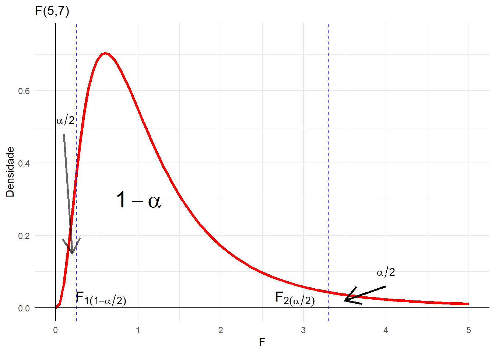
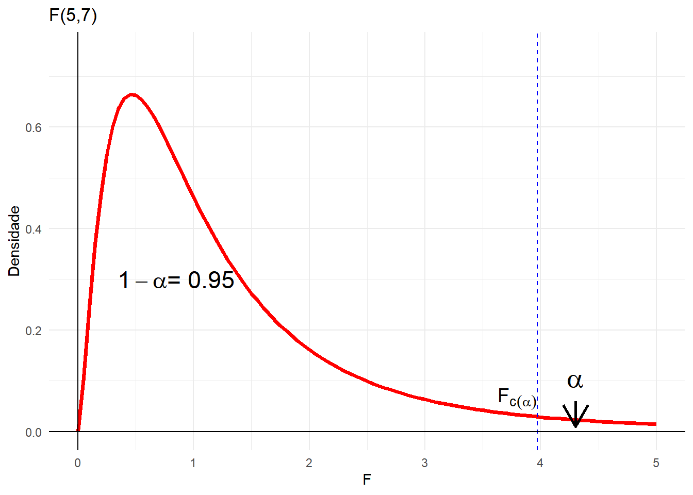
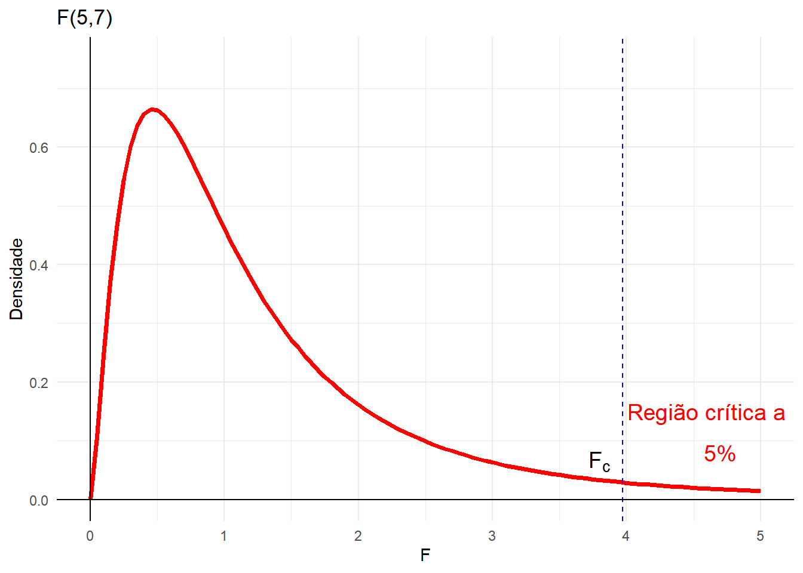
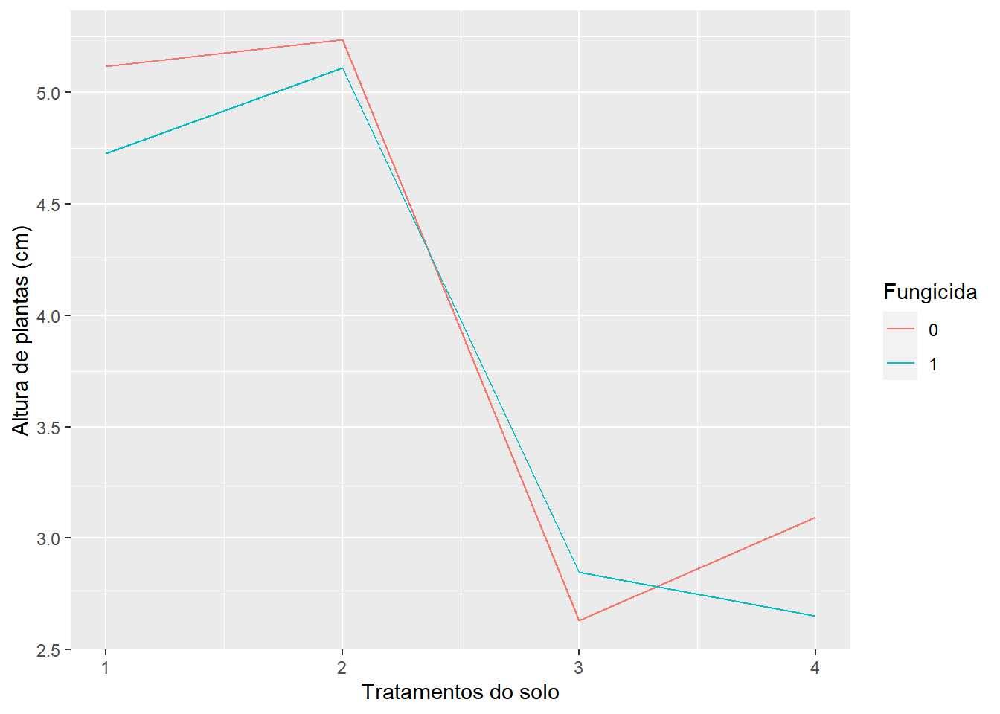
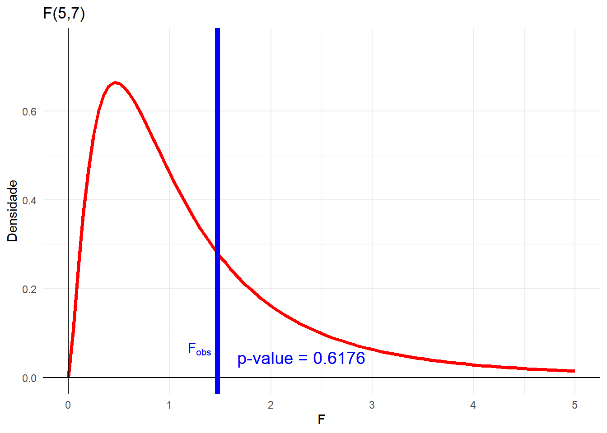
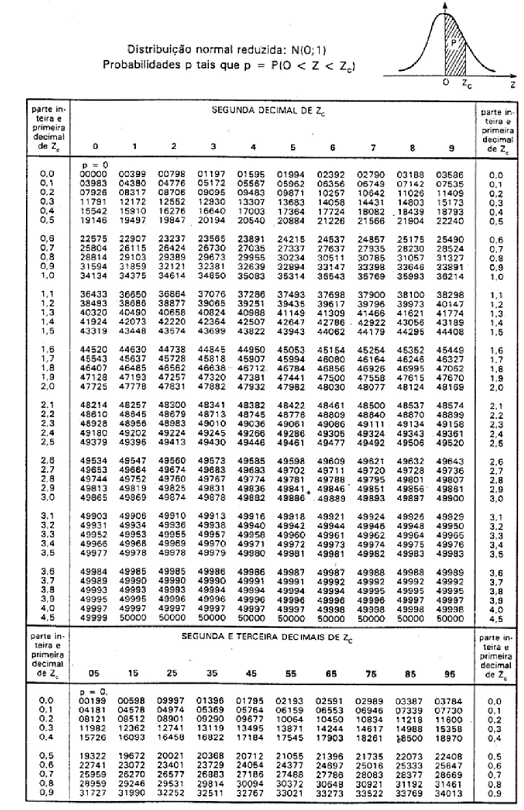
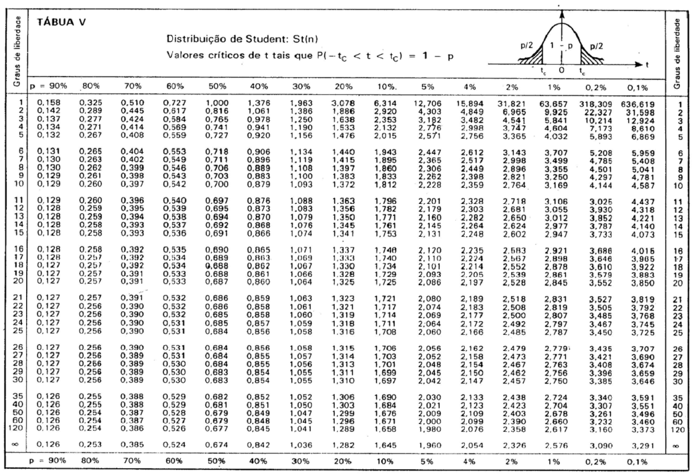
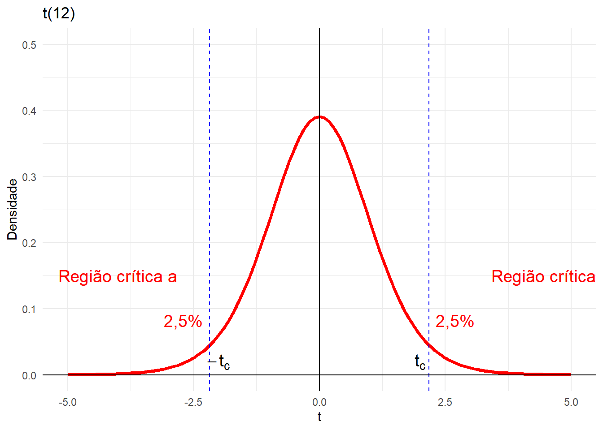
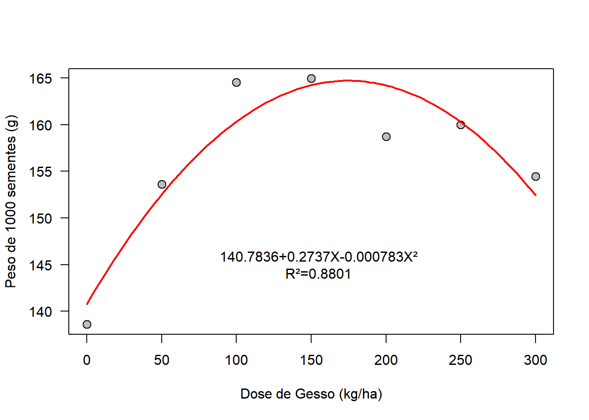
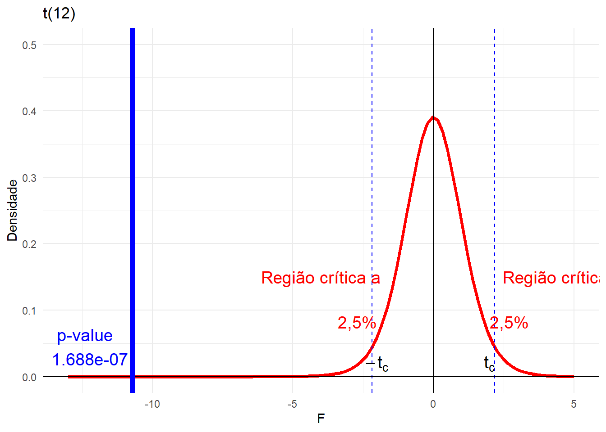

Capítulo 2 COMPARAÇÕES DE PARÂMETROS DE DUAS POPULAÇÕES
2.1 Comparação da variância de duas populações normais
Suponha duas amostras aleatórias independentes de tamanhos \(n_1\) e \(n_2\) ou seja, \(X_1,X_2,...,X_{n_1}\) e \(Y_1,Y_2,...,Y_{n_2}\), respectivamente, de uma população com distribuição \(N(\mu_1, \sigma_1^2)\) e de uma população com distribuição \(N(\mu_2, \sigma_2^2)\).
Hipóteses: \[ H_0: \sigma_1^2 = \sigma_2^2 \text{ ou } (\sigma_1^2 /\sigma_2^2 =1) \\ H_1: \sigma_1^2 \neq \sigma_2^2 \text{ ou } (\sigma_1^2 /\sigma_2^2 \neq 1) \]
Estatística do Teste
Sendo \(s_1^2\) e \(s_2^2\) as variâncias, respectivamente, das amostras \(n_1\) e \(n_2\), o quociente
\[ \frac{s^2_1/\sigma^2_1}{s^2_2/\sigma^2_2} \] Segue uma distribuição F de Snedecor com \(n_1-1\) e \(n_2-1\) graus de liberdade (GL), denotada por \(F(n_1-1,n_2-1)\)
Sob a suposição de \(H_0\) ser verdadeira, isto é, \(\sigma_1^2 = \sigma_2^2\), tem-se que
\[ F= \frac{s^2_1}{s^2_2}: F(n_1-1,n_2-1) \] A distribuição F é relacionada à distribuição \(\chi^2\) (lê-se Qui-quadrado).
Para maiores informações: An Introduction to the F Distribution
A função densidade probabilidade da distribuição F é dada por:
\[ f(x) = \frac{\Gamma(\frac{\nu1+\nu2}{2})(\frac{\nu1}{\nu2})^{\frac{\nu1}{2}}x^{\frac{\nu1}{2}-1}}{\Gamma(\frac{\nu1}{2}) \Gamma(\frac{\nu2}{2}) (1+\frac{\nu1}{\nu2}x)^{\frac{\nu1+\nu2}{2}}} \text{ para } x> 0 \] Onde: \(\nu1\) são os graus de liberdade de \(s^2_1\), \(\nu2\) são os graus de liberdade de \(s^2_2\) e \(\Gamma\) é a função gama, uma extensão da função fatorial para números reais positivos.
Construção da região crítica:
Fixado \(\alpha\), os pontos críticos serão F1 e F2 da distribuição F, tais que:

Se \(\alpha = 10\%\), pode-se, utilizando a Tabela abaixo, encontrar diretamente \(F_{2(5\%)}\):

exemplo
Dado: \(n_1-1\) = 5 e \(n_2-1\) = 7, a um \(\alpha\) de 5% (alpha da tabela) temos que olhar na coluna 5 (graus de liberdade do numerador) e na linha 7 (graus de liberdade do denominador) e teremos o valor \(F_2 = 3,97\)
Para encontrarmos \(F_{1(5\%)}\), utilizamos uma propriedade de integração, o que na prática significa:
\[ F_{(1-\alpha, n_1-1, n_2-1)} = \frac{1}{F_{(\alpha, n_2-1, n_1-1)}} \\ \text{ou seja} \\ F_{(95\%, n_1-1, n_2-1)} = \frac{1}{F_{(5\%, n_2-1, n_1-1)}} \\ F_{(95\%, 5, 7)} = \frac{1}{F_{(5\%, 7, 5)}} = \frac{1}{4,88} = 0,205 \]
O valor é o inverso daquele observado na Tabela, obtido pela inversão dos graus de liberdade.
Portanto, a região crítica do teste será: \(RC = \{ F < 0,205 \text{ ou } F > 3,97 \}\).
O mesmo valor pode ser obtido no R a partir da função qf(p,df1,df2), cujos argumentos são: p o valor da área (probabilidade) acumulada até o valor F desejado, df1 é o grau de liberdade do numerador e df2 é o grau de liberdade do denominador:

## [1] 3.971523## [1] 0.2050915Na prática o procedimento é mais simples: primeiro calcula-se o \(F\) da amostra utilizando sempre o maior valor de variância no numerador \((s^2_1 > s_2^2)\), portanto \(F > 1\) e consideramos o ponto crítico sempre em \(F_{2(\alpha, n_1-1, n_2-1)}\)

Assim, a região crítica do teste será \(RC = \{F > F_c\}\)
Calculamos a estatística na amostra como :
\[ F_{obs} = \frac{s^2_1}{s^2_2} \text{, com } s_1^2 > s^2_2 \] As hipóteses sempre serão \[ H_0: \sigma_1^2 = \sigma_2^2 \text{ ou } (\sigma_1^2 /\sigma_2^2 =1) \\ H_1: \sigma_1^2 > \sigma_2^2 \text{ ou } (\sigma_1^2 /\sigma_2^2 > 1) \]
Conclusão
Se \(F_{obs} \not\in RC\) então não rejeitamos \(H_0\) e concluímos que as variâncias são iguais ou seja HOMOCEDÁSTICAS
Se \(F_{obs} \in RC\) então rejeitamos \(H_0\) e concluímos que as variâncias são diferentes ou seja HETEROCEDÁSTICAS
EXEMPLO:
Em um ensaio de competição de 2 cultivares de milho, onde a cultivar \(A\) foi plantada e 6 parcelas (n=6 amostras) e a cultivar B em 8 parcelas amostras (n=8 amostras), as produções em kg/ha foram obervadas na tabela:
| Cultivar | |||||||||
|---|---|---|---|---|---|---|---|---|---|
| 1 | 1470 | 1920 | 2340 | 2100 | 1920 | 1480 | |||
| 2 | 3260 | 3990 | 4050 | 3420 | 3510 | 3880 | 3550 | 3660 |
Comparar ao nível de 5% de significância se as variâncias desses cultivares são iguais
PASSO 1: Definir \(H_0\) e \(H_1\). \[ H_0: \sigma_1^2 = \sigma_2^2 \text{ ou } (\sigma_1^2 /\sigma_2^2 =1) \\ H_1: \sigma_1^2 > \sigma_2^2 \text{ ou } (\sigma_1^2 /\sigma_2^2 > 1) \]
PASSO 2: Calcular a estatística do teste.
Definir os graus de liberdade:
\[ n_A = 6 \\ n_B = 8 \]
Assim:
\[ \nu_1 = 6 - 1 = 5 \\ \nu_2 = 8 - 1 = 7 \\ \]
Calcular as variâncias de A e B
\[ s_A^2 = 118176,7 \\ s_B^2 = 80200,00 \]
Como \(s^2_A > s^2_B\) vamos calcular o \(F_{obs}\)
\[ F_{obs} = \frac{s^2_A}{s^2_B} = \frac{118076,7}{80200}=1,4735 \] PASSO 3: Construir a Região Crítica.

Olhando na tabela \(F_{(0,05; 5; 7)} = 3,97\)
Assim, a região crítica do teste será \(RC = \{F > 3,97\}\)
PASSO 4: Comparar \(F_{obs}\) com o \(F_c\).

PASSO 5: Concluir o teste.
Como \(F{obs} \not\in RC\) não rejeitamos \(H_0\) ao nível de 5% de significância, e concluímos que as variedades de milhos testadas têm variâncias semelhantes, ou seja, são homocedásticas.
Resolvendo no R

# Construir os vetores de dados
vA<- c(1470,1920,2340,2100,1920,1480)
vB<- c(3260,3990,4050,3420,3510,3880,3550,3660)
# Aplicar o teste de variâncias
var.test(vA,vB,conf.level = 0.95)##
## F test to compare two variances
##
## data: vA and vB
## F = 1.4735, num df = 5, denom df = 7, p-value = 0.6176
## alternative hypothesis: true ratio of variances is not equal to 1
## 95 percent confidence interval:
## 0.2788001 10.0981750
## sample estimates:
## ratio of variances
## 1.473525Interpretação no R: Observe que a função retorna a estatística do teste \(F = 1.4735\) seguido pelos valores de graus de liberdade (\(df\), do inglês degrees of freedom) para o numerador (\(5\)) e para o denominador (\(7\)), e o valor-p (\(p-value = 0.6176\)).
Passo 1: Identificar o p-valor \(p-value\) do teste:
O \(p-value\) indica a probabilidade (área embaixo da curva) após o valor de \(F_{obs}\), ou seja, a probabilidade associada à estatística \(F_{obs}\) foi de \(0,6176\), como apresentado abaixo:

PASSO 2: Comparar \(p-value\) com o \(\alpha\).
Se \(p-value > \alpha\) então não rejeitamos \(H_0\) e concluímos que as variâncias são iguais ou seja HOMOCEDÁSTICAS, caso contrário, rejeitamos \(H_0\).
PASSO 3: Concluir o teste.
Para o nosso exemplo, \(p-value\) foi maior que o \(\alpha\), ou seja:
Como \(p-value > \alpha\) não rejeitamos \(H_0\) ao nível de 5% de significância, e concluímos que as variedades de milhos testadas são homocedásticas.
2.2 Comparação de duas médias de populações normais: amostras independentes
Com o objetivo de se comparar duas populações ou, sinonimamente, dois tratamentos, examinaremos a situação na qual os dados estão na forma de realizações de amostras aleatórias de tamanhos \(n_1\) e \(n_2\), selecionadas, respectivamente, das populações 1 e 2.
Os dados são as medidas das respostas associadas com o seguinte delineamento experimental. Uma coleção de \(n_1 + n_2\) elementos são aleatoriamente divididos em 2 grupos de tamanhos \(n_1\) e \(n_2\), onde cada membro do primeiro grupo recebe o tratamento 1 e do segundo, o tratamento 2.
Especificamente, estaremos interessados em fazer inferência sobre o parâmetro: \(\mu_1 - \mu_2\) (média da popilação 1) - (média da população 2)
Formalmente, suponha duas amostras aleatórias independentes de tamanhos \(n_1\) e \(n_2\) ou seja, \(X_1,X_2,...,X_{n_1}\) e \(Y_1,Y_2,...,Y_{n_2}\), respectivamente, de uma população com distribuição \(N(\mu_1, \sigma_1^2)\) e de uma população com distribuição \(N(\mu_2, \sigma_2^2)\).
Para cada uma dessas populações nós temos os seguitnes estiamdores \(\bar{x}\), \(\bar{y}\) médias de população 1 e 2 respectivamente; \(s^2_1\), \(s^2_2\) variâncias amostrais para as populações 1 e 2, respectivamente.
Hipóteses: \[ \begin{cases} H_0:\mu_1=\mu_2, \; ou\;(\mu_1-\mu_2 = 0) \\ H_1: \mu_1\neq\mu_2, \; ou\;(\mu_1-\mu_2 \neq 0),\; bilateral \end{cases} \]
ou
\[ H_1: \mu_1 >\mu_2, \; ou\;(\mu_1-\mu_2 > 0),\; unilateral \; direita \]
ou
\[ H_1: \mu_1 < \mu_2, \; ou\;(\mu_1-\mu_2 < 0),\; unilateral\; esquerda \]
Estatística do Teste:
\[ z = \frac{(\bar{x}-\bar{y})-(\mu_1-\mu_2)}{\sqrt{\frac{\sigma^2_1}{n_1}+\frac{\sigma^2_2}{n_2}}}: N(0,1) \]
Caso 1: variâncias conhecidas
Para testar a hipótese \(H_0\) usa-se a estatística anterior.
Ao supormos \(H_0\) verdadeira então \(\mu_1-\mu_2 = 0\), portanto a estatística
\[ z = \frac{(\bar{x}-\bar{y})}{\sqrt{\frac{\sigma^2_1}{n_1}+\frac{\sigma^2_2}{n_2}}} \]
Tem distribuição \(N(0,1)\), portanto a região crítica do teste é construída a partir da Tabela Normal Padrão

Caso 2: variâncias desconhecidas e iguais (Teste t)
Preliminarmente, testa-se se as variâncias das duas populações são iguais, homocedásticas, pelo teste F de Snedecor.
Caso a hipótese \(H_0\) não seja rejeitada, vamos utilizar a estatística estatística t com \(n_1+n_2 - 2\) graus de liberdade:
\[ t = \frac{(\bar{x} - \bar{y})}{S_p \cdot \sqrt{\frac{1}{n_1} +\frac{1}{n_2}} }: t(n_1+n_2 - 2) \]
\(Sp\) é o estimador não viciado do desvio padrão das populações, o qual é calculado por uma média ponderada:
\[ S_P=\sqrt{\frac{(n_1 - 1)\cdot s^2_1+(n_2-1)\cdot s^2_2}{(n_1 - 1)+(n_2-1)}} \] Portanto a região crítica do teste é construída a partir da Tabela da distribuição t ao nível \(\alpha\) com \(n_1+n_2 - 1\) graus de liberdade.

Caso 3: variâncias desconhecidas e desiguais (Teste de Smith-Satterthwaite)
Quando a hipótese de igualdade de variâncias for rejeitada, o a estatística do teste fica:
\[ t = \frac{(\bar{x}-\bar{y})}{\sqrt{\frac{s^2_1}{n_1}+\frac{s^2_2}{n_2}}}: \] Essa estatística aproxima-se de uma dirtribuição t de Student com o número de graus de liberdade dado por, aproximadamente:
\[ gl'=\frac{(\frac{s^2_1}{n_1}+\frac{s_2^2}{n_2})^2}{\frac{(\frac{s^2_1}{n_1})^2}{n_1-1}+\frac{(\frac{s^2_2}{n_2})^2}{n_2-1}} \] Como o número de graus de liberdade assim calculado, geralmente, é não inteiro, recomenda-se aproximá-lo para o inteiro imediatamente anterior a este.
EXEMPLO:
Em um ensaio de competição de 2 cultivares de milho, onde a cultivar \(A\) foi plantada e 6 parcelas (n=6 amostras) e a cultivar B em 8 parcelas amostras (n=8 amostras), as produções em kg/ha foram obervadas na tabela:
| Cultivar | |||||||||
|---|---|---|---|---|---|---|---|---|---|
| 1 | 1470 | 1920 | 2340 | 2100 | 1920 | 1480 | |||
| 2 | 3260 | 3990 | 4050 | 3420 | 3510 | 3880 | 3550 | 3660 |
Comparar ao nível de 5% de significância se as Médias desses cultivares são iguais.
PASSO 1: Definir \(H_0\) e \(H_1\). \[ H_0: \mu_1 = \mu_2 \text{ ou } (\mu_1 - \mu_2 =0) \\ H_1: \mu_1 \neq \mu_2 \text{ ou } (\mu_1 - \mu_2\neq 0) \]
PASSO 2: Calcular a estatística do teste para o caso 2 variâncias desconhecidas e iguais (Teste t).
Calcular a média dos cultivares:
Cultivar A
\[ Média: \bar{x} = 1871,667\;kg.ha^{-1}\\ Variância: s^2_1 = 118176.7\;[kg.ha^{-1}]^2 \]
Cultivar B
\[ Média: \bar{x} = 3665\;kg.ha^{-1}\\ Variância: s^2_1 = 80200\;[kg.ha^{-1}]^2 \] Vamos estimar \(Sp\):
\[
S_P=\sqrt{\frac{(n_1 - 1)\cdot s^2_1+(n_2-1)\cdot s^2_2}{(n_1 - 1)+(n_2-1)}} =\sqrt{\frac{(6 - 1)\cdot 118176.7+(8-1)\cdot 80200}{(6 - 1)+(8-1)}} = 309,8768\;kg\;ha^{-1}
\]
## [1] 309.8768Vamos calcular a estatística:
\[ t_{obs} = \frac{(\bar{x} - \bar{y})}{S_p \cdot \sqrt{\frac{1}{n_1} +\frac{1}{n_2}} }=\frac{(1871,667 - 3665)}{309,8768 \cdot \sqrt{\frac{1}{6} +\frac{1}{8}} } = -10,7159 \]
## [1] -10.7159PASSO 3: Construir a Região Crítica.
Portanto a região crítica do teste é construída a partir da Tabela da distribuição t ao nível \(5\%\) com $(6 + 8 - 2) = 12 $ graus de liberdade.

Olhando na tabela \(t_{(0,05; 12)} = 2,179\)
Assim, a região crítica do teste será \(RC = \{t < -2,179 \;ou\;t>2,179\}\)
PASSO 4: Comparar \(t_{obs}\) com o \(t_c\).

PASSO 5: Concluir o teste.
Como \(t_{obs} \in RC\) rejeitamos \(H_0\) ao nível de 5% de significância, e concluímos que as médias dos cultivares de milhos testadas são diferentes, ou seja, a cultivar B apresenta uma média maior que a cultivar A.
# Construir os vetores de dados
vA<- c(1470,1920,2340,2100,1920,1480)
vB<- c(3260,3990,4050,3420,3510,3880,3550,3660)
# Aplicar o teste de Médias, pelo teste t
t.test(vA,vB,
alternative = "t", # use t para bilateral, "l" para unilateral a esquerda e "g" para unilateral a direita
var.equal = TRUE, # TRUE se as variância forem iguais, caso contrário, FALSE
conf.level = 0.95) # Nível de confiança do teste##
## Two Sample t-test
##
## data: vA and vB
## t = -10.716, df = 12, p-value = 1.688e-07
## alternative hypothesis: true difference in means is not equal to 0
## 95 percent confidence interval:
## -2157.963 -1428.703
## sample estimates:
## mean of x mean of y
## 1871.667 3665.000Interpretação no R: Observe que a função retorna a estatística do teste \(t = -10.716\) seguido pelos valores de graus de liberdade (\(df\)) igual a \(12\), e o valor-p (\(p-value = 1.688e-07\)) que significa \(0,0000001688\).
O \(p-value\) indica a probabilidade (área embaixo da curva) antes do valor de \(t_{obs}\), no caso dele ser negativo, a probabilidade associada à estatística \(t_{obs}\) foi de \(0,0000001688\), como apresentado abaixo. Se o valor de \(t_{obs}\) for positivo, 0 \(p-value\) indica a probabilidade (área embaixo da curva) depois do valor de \(t_{obs}\)

PASSO 2: Comparar \(p-value\) com o \(\alpha\).
Se \(p-value > \alpha\) então não rejeitamos \(H_0\) e concluímos que as médias são iguais, caso contrário, rejeitamos \(H_0\).
PASSO 3: Concluir o teste.
Para o nosso exemplo, \(p-value\) foi menor que o \(\alpha\), ou seja:
Como \(p-value < \alpha\) rejeitamos \(H_0\) ao nível de 5% de significância, e concluímos que os cultivares de milhos testadas são apresentam médias diferentes.